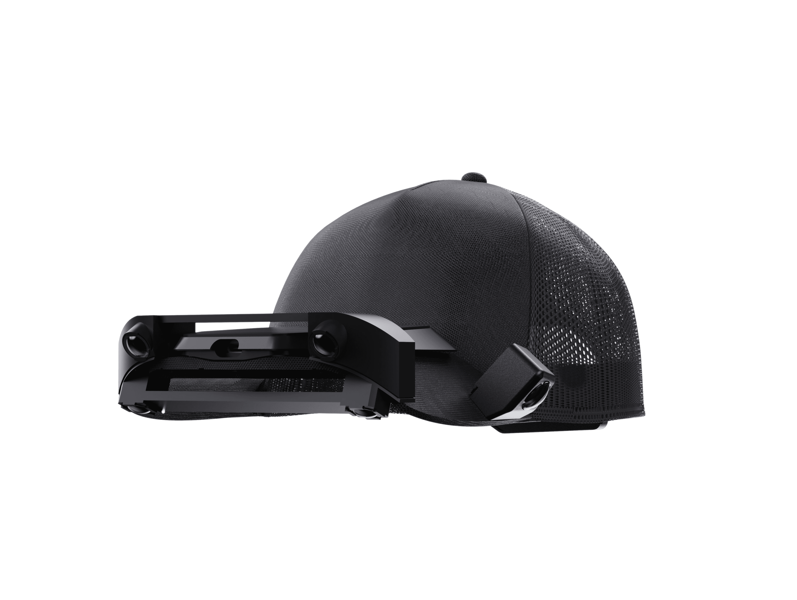
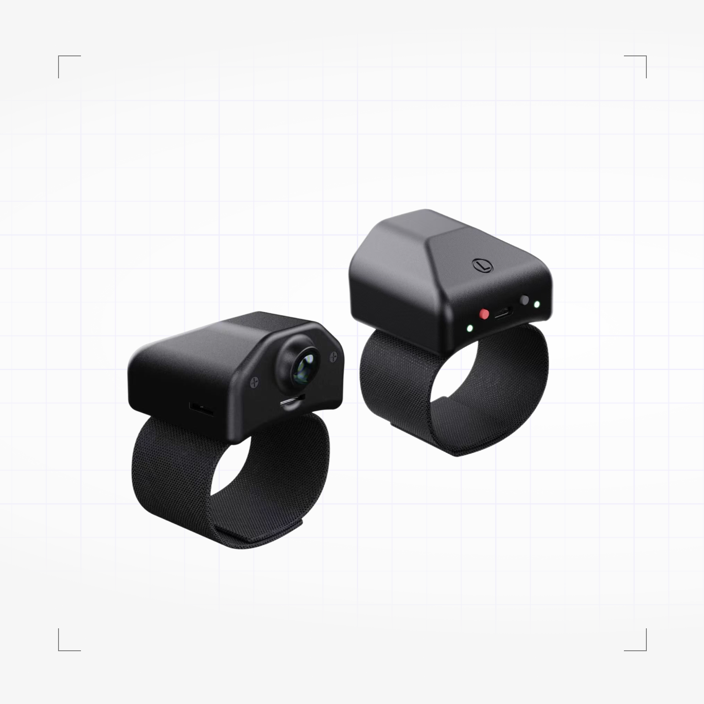
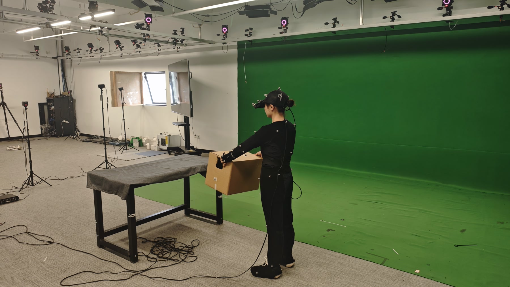

About RoboMoCap
Egocentric vision.High-fidelity whole-body motion.
RoboMoCap pairs multimodal first-person observations with optical whole-body motion capture for humanoid robot learning. With six head-mounted and two wrist-mounted cameras, the dataset captures diverse locomotion and loco-manipulation behaviours, from everyday walking to dynamic movements and complex object interactions.
Beyond what egocentric cameras can see. While many egocentric datasets focus primarily on hand-object interactions, RoboMoCap emphasises locomotion and loco-manipulation. By pairing first-person observations with high-fidelity optical motion capture, it provides accurate supervision for lower-body movement, foot placement, and whole-body coordination during navigation and object interactions.
Capture system
Data modalities

Egocentric sensing
Six head-mounted cameras provide complementary forward, downward, and side views, alongside IMU, magnetometer measurements, and WAV audio.

Wrist sensing
Left and right wrist cameras record close-range hand–object interactions, alongside IMU and magnetometer measurements.
Whole-body motion
A 53-marker NOKOV optical mocap setup records whole-body motion at 120 Hz, including leg and foot movement outside the wearable camera views.
External video
NOKOV's third-person video records the participant, manipulated objects, and the surrounding space.
Object motion
Reflective markers track manipulated objects alongside the participant's body motion.
Object geometry
Textured 3D scans preserve the shape and appearance of objects used in the recordings.
Hand pose
Hand pose complements wrist video to describe hand movements during interaction.
Data processing
Capture and processing
RoboCap and RoboWrist record video and inertial measurements. NOKOV measures body and object markers and tracks a rigid marker cluster on the headset. The headset pose and camera calibration place all six head-mounted views in the motion-capture coordinate frame.

The capture space
The participant wears RoboCap and RoboWrist while the NOKOV system records body motion. Reflective markers track the person and objects during the activity.
Video and body motion over time
Humanoid robot training
Dataset organization
Dataset structure
RoboMoCap defines 290+ actions across eight categories, with a strong emphasis on locomotion and loco-manipulation. Activities range from walking, turning, and dynamic posture transitions to object transport, environmental interactions, and collaborative tasks.
The protocols introduce variations in movement speed, direction, terrain, object handling, and carrying configurations. Longer activities combine navigation, reaching, manipulation, and object placement into continuous whole-body motion sequences.
The action taxonomy
293 captured actions / 8 families
Action examples
Data distribution
Interactive example